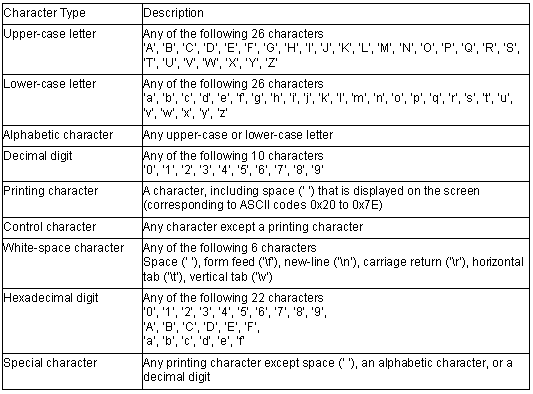

<ctype.h>
Performs type determination and conversion for characters.
In the above functions, if the input parameter value is not within the range that can be represented by the unsigned char type and is not EOF, the operation of the function is undefined. Character types are listed in table .
Table Character Types

int isalnum(int c)
Description: Tests for an alphabetic character or decimal digit.
Header file: <ctype.h>
Return values:
If character c is alphabetic or a decimal digit: Nonzero
If character c is not alphabetic or a decimal digit: 0
Parameters: c Character to be tested
Example: #include <ctype.h>
int c, ret;
ret=isalnum(c);
int isalpha(int c)
Description: Tests for an alphabetic character.
Header file: <ctype.h>
Return values: If character c is alphabetic: Nonzero
If character c is not alphabetic:0
Parameters: c Character to be tested
Example: #include <ctype.h>
int c, ret;
ret=isalpha(c);
int iscntrl(int c)
Description: Tests for a control character.
Header file: <ctype.h>
Return values: If character c is a control character:Nonzero
If character c is not a control character:0
Parameters: c Character to be tested
Example: #include <ctype.h>
int c, ret;
ret=iscntrl (c);
int isdigit(int c)
Description: Tests for a decimal digit.
Header file: <ctype.h>
Return values: If character c is a decimal digit: Nonzero
If character c is not a decimal digit: 0
Parameters: c Character to be tested
Example: #include <ctype.h>
int c, ret;
ret=isdigit(c);
int isgraph(int c)
Description: Tests for any printing character except space (' ').
Header file: <ctype.h>
Return values: If character c is a printing character except space: Nonzero
If character c is not a printing character except space: 0
Parameters: c Character to be tested
Example: #include <ctype.h>
int c, ret;
ret=isgraph(c);
int islower(int c)
Description: Tests for a lower-case letter.
Header file: <ctype.h>
Return values: If character c is a lower-case letter: Nonzero
If character c is not a lower-case letter: 0
Parameters: c Character to be tested
Example: #include <ctype.h>
int c, ret;
ret=islower(c);
int isprint(int c)
Description: Tests for a printing character, including space (' ').
Header file: <ctype.h>
Return values: If character c is a printing character, including space: Nonzero
If character c is not a printing character, including space: 0
Parameters: c Character to be tested
Example: #include <ctype.h>
int c, ret;
ret=isprint(c);
int ispunct(int c)
Description: Tests for a special character.
Header file: <ctype.h>
Return values: If character c is a special character: Nonzero
If character c is not a special character: 0
Parameters: c Character to be tested
Example: #include <ctype.h>
int c, ret;
ret=ispunct(c);
int isspace(int c)
Description: Tests for a space character.
Header file: <ctype.h>
Return values: If character c is a space character: Nonzero
If character c is not a space character: 0
Parameters: c Character to be tested
Example: #include <ctype.h>
int c, ret;
ret=isspace(c);
int isupper(int c)
Description: Tests for an upper-case letter.
Header file: <ctype.h>
Return values: If character c is an upper-case letter: Nonzero
If character c is not an upper-case letter: 0
Parameters: c Character to be tested
Example: #include <ctype.h>
int c, ret;
ret=isupper(c);
int isxdigit(int c)
Description: Tests for a hexadecimal digit.
Header file: <ctype.h>
Return values: If character c is a hexadecimal digit: Nonzero
If character c is not a hexadecimal digit:0
Parameters: c Character to be tested
Example: #include <ctype.h>
int c, ret;
ret=isxdigit(c);
int tolower(int c)
Description: Converts an upper-case letter to the corresponding lower-case letter.
Header file: <ctype.h>
Return values: If character c is an upper-case letter:Lower-case letter corresponding to character c
If character c is not an upper-case letter: Character c
Parameters: c Character to be converted
Example: #include <ctype.h>
int c, ret;
ret=tolower(c);
int toupper(int c)
Description: Converts a lower-case letter to the corresponding upper-case letter.
Header file: <ctype.h>
Return values: If character c is a lower-case letter:Upper-case letter corresponding tocharacter c
If character c is not a lower-case letter: Character c
Parameters: c Character to be converted
Example: #include <ctype.h>
int c, ret;
ret=toupper(c);